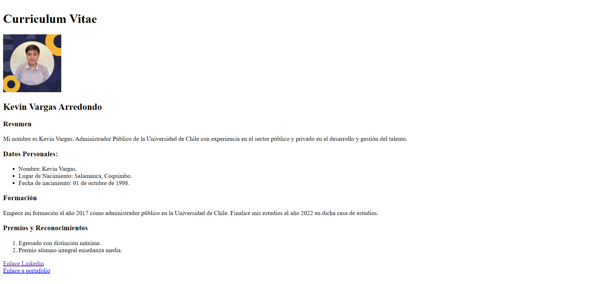
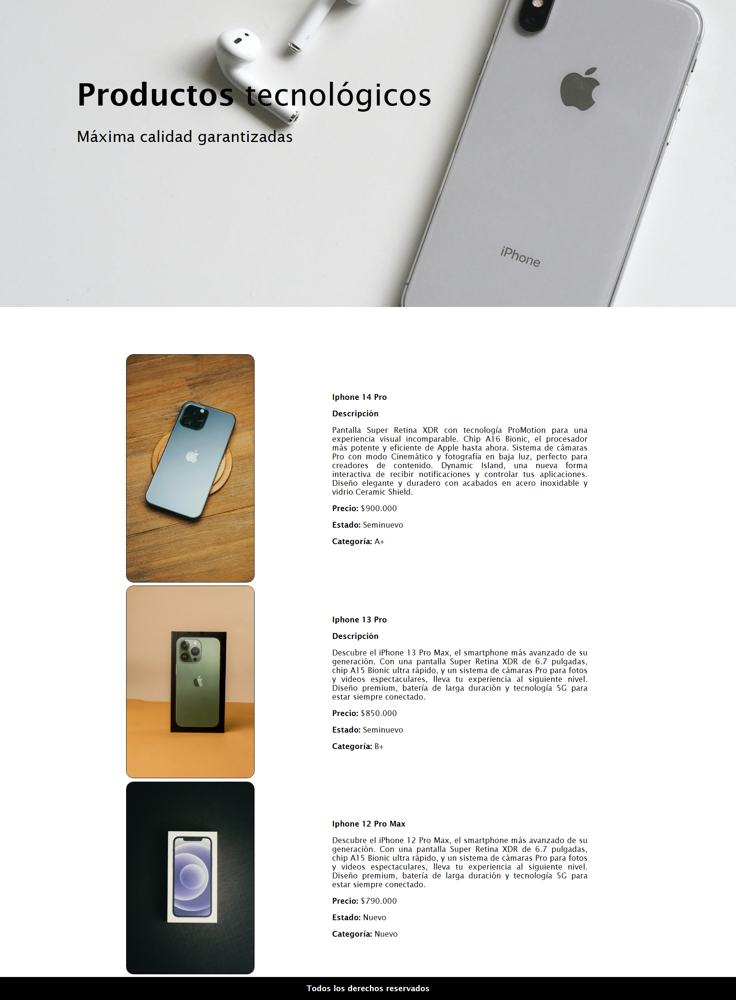
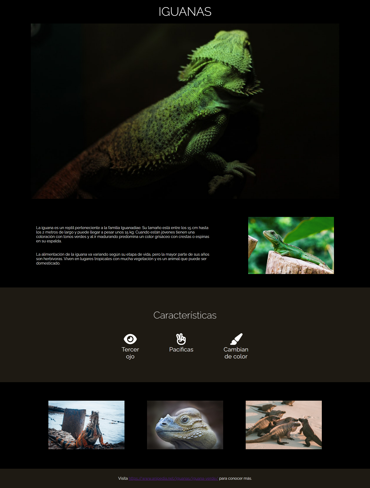
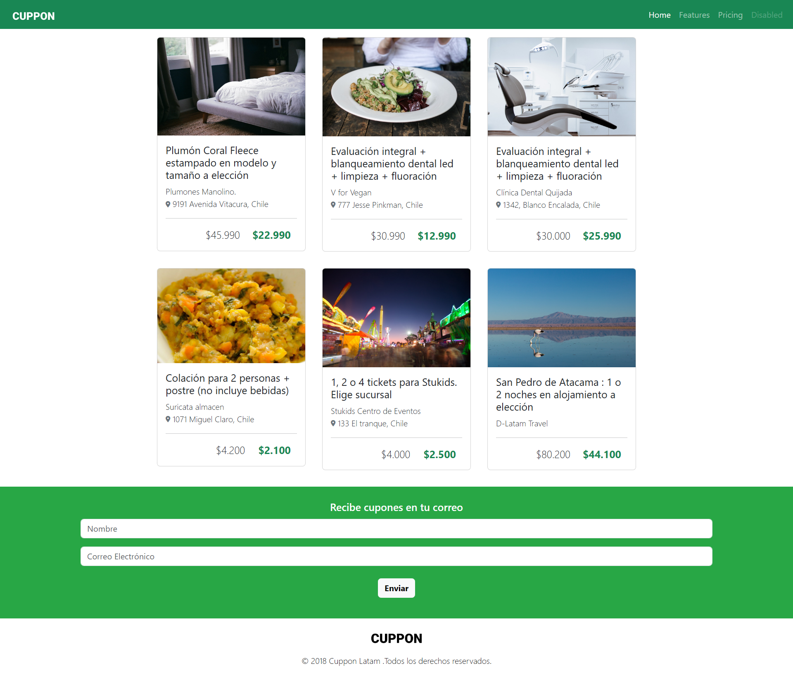
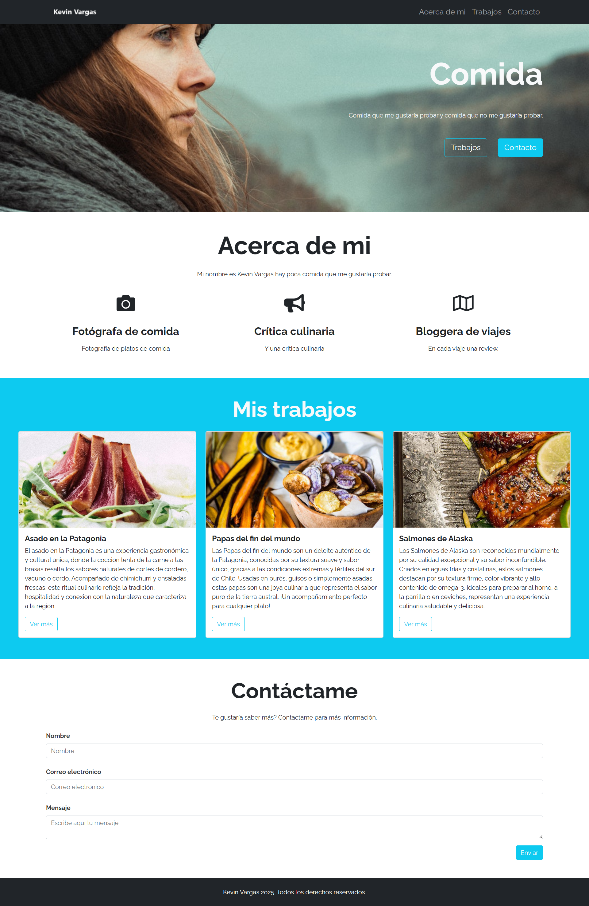
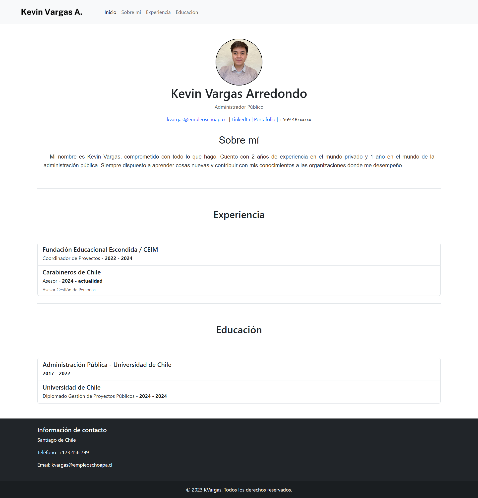

EJERCICIO / 01
CV inicial ↗
Primer ejercicio de estructura y contenido en HTML.
Primeros ejercicios de desarrollo web. Una bitácora del proceso, desde el HTML inicial hasta este portafolio.

Primer ejercicio de estructura y contenido en HTML.

Una landing page de productos construida con HTML y CSS.

Composición visual y contenidos en una página informativa.

Una exploración de tarjetas y diseño adaptable con Bootstrap.

Práctica de colaboración y control de versiones con Git.

El portafolio personal como proyecto en evolución.